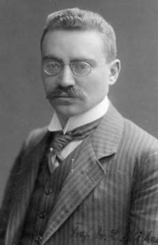

PhD encounters · interactive models
Michaelis–Menten kinetics


.jpg){kind=link}
In 1913, in a hospital laboratory in Berlin, Leonor Michaelis and Maud Menten measured how fast invertase, an enzyme from yeast, splits table sugar into glucose and fructose. They were careful about two things. They looked only at the first moments of each reaction, and they held the acidity constant with a buffer, four years after Sørensen had defined the pH scale. The rates then fell on one simple curve:
v = Vmax · [S] / (Km + [S])v is the reaction rate, [S] is the concentration of substrate
Menten was a Canadian physician, among the first women in her country to earn a medical doctorate. The French chemist Victor Henri had proposed the same equation about ten years earlier, but it was their measurements that made it stick. The idea behind it is that an enzyme has to bind its substrate before it can work. Once every enzyme molecule is busy, adding more substrate changes nothing.
Top chart, the Michaelis–Menten curve. Vertical: reaction rate in mM per minute. Horizontal: substrate concentration in mM.
Bottom chart, the reaction over time, starting from S₀. Vertical: concentration in mM. Horizontal: time in minutes.
What the values mean
- [S] · substrate
- The concentration of the molecule the enzyme works on, in millimoles per litre (mM). For invertase it is sucrose.
- v · reaction rate
- How much substrate is turned into product each minute, in mM per minute.
- Vmax · maximum rate
- The rate when every enzyme molecule is busy. It depends on how much enzyme there is and how fast each molecule works.
- Km · Michaelis constant
- The substrate concentration at which the reaction runs at half of Vmax. A small Km means the enzyme is already close to full speed when there is little substrate around.
- S₀ · starting substrate
- The substrate concentration at time zero. It is the open circle on the top chart and the starting height of the bottom chart.
- Inhibitor level
- The concentration of an inhibitor divided by its own binding constant Ki. At 1 the inhibitor holds half of the enzyme it can reach.
- Competitive
- The inhibitor sits in the same site as the substrate. Km appears larger and Vmax stays the same, so enough substrate still wins.
- Non-competitive
- The inhibitor binds somewhere else and switches the enzyme off. Vmax drops and Km stays the same. More substrate does not help.
- Rate at the start
- The rate at S₀, before any substrate has been used. This is what Michaelis and Menten measured.
- Share of Vmax reached
- The starting rate as a percentage of the maximum rate without inhibitor.
- Half the substrate gone after
- The time at which half of S₀ has been converted.
- Top chart
- The equation itself. It has the same shape as Monod's curve for microbial growth. Monod found his by fitting measurements. This one has a mechanism behind it.
- Bottom chart
- What the equation implies for a reaction left to run. While substrate is plentiful the lines are straight, and they bend as it runs short.
| Try this | What it shows |
|---|---|
| S₀ at 50, Km at 0.5 | The enzyme is saturated. Product builds up along a straight line and stops with a sharp corner. |
| S₀ at 2, Km at 25 | The enzyme is mostly idle. The rate follows the substrate down and the curve fades out slowly. |
| Competitive, raise the inhibitor | The curve is pushed to the right but still climbs towards the same ceiling. |
| Non-competitive, raise the inhibitor | The ceiling itself comes down. The half-speed point stays at the same substrate concentration. |
Source: L. Michaelis and M. L. Menten, “Die Kinetik der Invertinwirkung”, Biochemische Zeitschrift 49, 333–369 (1913). The derivation used today, with a steady-state assumption, is from G. E. Briggs and J. B. S. Haldane (1925). The bottom chart uses the integrated form of the equation, so no numerical solver is needed. The code in this repository was generated with Claude (Anthropic).